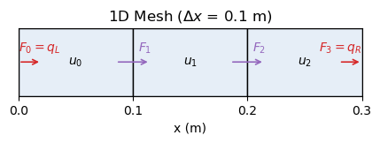

Chapter 1: Code and Fix#
In this section, we introduce our running example that we will use throughout the tutorial: the 1-D heat equation. We will develop a simple numerical solver for this equation (~10 lines of code). To do so, we’ll start the way many scientific codes start: based on a scientific description, start coding, and get something working.
Goals#
Implement a quick, working solution for the 1-D heat equation using explicit Euler scheme.
Experience the “business-as-usual” approach to scientific computing.
Observe the drawbacks of unstructured, monolithic code.
Key Concepts#
Diffusion equation (PDE) and discretization
Flux calculations and explicit Euler update
“Code-and-fix” model: fast prototyping with minimal reasoning
The 1-D Heat Equation#
Consider a 1-D insulated rod (no internal sources/sinks). The temperature u(x,t) evolves by the heat equation:
where \(\kappa\) is the thermal diffusivity of the material [\(m^2/s\)].
Discretization (finite-volume flavor)#
Split the domain into \(N\) cells of width \(\Delta x\).
Advance the simulation in time by a small time step \(\Delta t\).
Let \(F_{i}\) be the diffusive flux of \(u\) across the interface between cells i-1 and i.
\[F_{i} = -\kappa \frac{u_{i} - u_{i-1}}{\Delta x}\]Let \(div(F_i)\) be the divergence of flux in cell i.
\[div(F_i) = \frac{F_{i} - F_{i+1}}{\Delta x}\]Let \(u_i(t)\) be the average temperature in the i-th cell.
\[u_i^{n+1} = u_i^n + \Delta t \cdot div(F_i)\]where the superscript \(n\) denotes the time step.
Boundary Conditions#
At the outermost interfaces, we apply Neumann boundary conditions:
Prescribed diffusive heat fluxes at the boundaries (\(q_L\) and \(q_R\)).
For example, setting \(q_L\) = \(q_R\) = 0.0 models an insulated rod (no heat leaving or entering the domain).
Mesh#
Here is a visualization of a 1-D mesh consisting of 3 cells. The temperature values \(u_i\) are stored at the cell centers while the fluxes \(F_i\) are computed at the cell faces where positive fluxes indicate heat flow to the right. Boundary fluxes \(F_0\) and \(F_N\) are set according to the Neumann boundary conditions.

Exercise 1.1 - fill in the missing lines#
Complete the following function that advances the temperature by nt steps using the formulas for the diffusive flux \(F\) and the temperature \(u\).
def solve_heat_eqn(u0, kappa, dx, dt, qL, qR, nt):
"""Numerically solve the 1D heat equation.
Arguments
---------
u0 : array, The initial temperature distribution (C)
kappa : float, The thermal diffusivity (m^2/s).
dx : float, The spacing between grid points (m).
dt : float, The time step size (s).
qL : float, The diffusive heat flux at the left boundary (W/m^2).
qR : float, The diffusive heat flux at the right boundary (W/m^2).
nt : int, The number of time steps to simulate.
Returns
-------
array, The updated temperature distribution.
"""
N = len(u0) # Number of grid points
u = u0.copy() # Create a mutable copy of the initial condition
F = [0.0] * (N+1) # Fluxes at interfaces
dudt = [0.0] * N # Tendencies
for _ in range(nt):
# Boundary conditions
F[0], F[-1] = qL, qR
# Compute diffusive fluxes F
... # TODO
# Compute divergence of fluxes dudt
... # TODO
# Update the temperature field u
... # TODO
return u
One Possible Solution
Below collapsed cell includes a possible solution. Compare it with your own implementation. A common source of error is the loop indexing of the fluxes and the temperature arrays.
def solve_heat_eqn(u0, kappa, dx, dt, qL, qR, nt):
"""Numerically solve the 1D heat equation.
Arguments
---------
u0 : array, The initial temperature distribution (C)
kappa : float, The thermal diffusivity (m^2/s).
dx : float, The spacing between grid points (m).
dt : float, The time step size (s).
qL : float, The diffusive heat flux at the left boundary (W/m^2).
qR : float, The diffusive heat flux at the right boundary (W/m^2).
nt : int, The number of time steps to simulate.
Returns
-------
array, The updated temperature distribution.
"""
N = len(u0) # Number of grid points
u = u0.copy() # Create a mutable copy of the initial condition
F = [0.0] * (N+1) # Fluxes at interfaces
dudt = [0.0] * N # Tendencies
for _ in range(nt):
# Boundary conditions
F[0], F[-1] = qL, qR
# Fluxes at intermediate interfaces
for i in range(1, N):
F[i] = -kappa * (u[i] - u[i-1]) / dx
# Compute tendencies
for i in range(N):
dudt[i] = (F[i] - F[i+1]) / dx
# Update the temperature distribution
for i in range(N):
u[i] += dt * dudt[i]
return u
Quick Sanity Checks#
Try running this function for one timestep with the following input temperature distibution: [0.0, 100.0, 0.0]. The expected output is a new array representing the temperature distribution after one time step. One would expect the outer cells to heat up, while the middle cell cools down.
solve_heat_eqn(
u0 = [0.0, 100.0, 0.0],
kappa = 0.1, # thermal diffusivity (m^2/s)
dx = 1.0, # spatial step size (m)
dt = 0.01, # time step size (s)
qL = 0.0, # left boundary heat flux (W/m^2)
qR = 0.0, # right boundary heat flux (W/m^2)
nt = 1
)
[0.1, 99.8, 0.1]
Now, let’s re-run the function with a longer time step and see how the temperature distribution evolves.
solve_heat_eqn(
u0 = [0.0, 100.0, 0.0],
kappa = 0.1, # thermal diffusivity (m^2/s)
dx = 1.0, # length of each spatial cell (m)
dt = 1.0, # time step size (s)
qL = 0.0, # left boundary heat flux (W/m^2)
qR = 0.0, # right boundary heat flux (W/m^2)
nt = 1
)
[10.0, 80.0, 10.0]
As expected, the diffusion process is more pronounced with a larger time step. Now let’s run the simulation for 1000 time steps instead of just 1.
solve_heat_eqn(
u0 = [0.0, 100.0, 0.0],
kappa = 0.1, # thermal diffusivity (m^2/s)
dx = 1.0, # length of each spatial cell (m)
dt = 0.1, # time step size (s)
qL = 0.0, # left boundary heat flux (W/m^2)
qR = 0.0, # right boundary heat flux (W/m^2)
nt = 1000
)
[33.33333333333137, 33.333333333337265, 33.33333333333137]
The result of the above function call should converge to the steady-state solution of the heat equation: the mean temperature of the three nodes [0.0, 100.0, 0.0], i.e., 33.33 °C everywhere.
Exercise 1.2 - more sanity checks#
Come up with more sanity checks for solve_heat_equation in an attempt to find any potential flaws. Alternatively, check your own version of solve_heat_eqn for any discrepancies.
# TODO: more sanity checks
What we just did#
Got something working fast: based on a scientific description of the problem, we quickly implemented a computational solution.
Mixed concerns: one function that applies flux BCs, computes fluxes, and updates temperatures.
Stateful, in-place update: harder to reason about and to test in isolation.
No reasoning artifacts: no preconditions/postconditions, no invariants, no stability checks.
Only ad-hoc sanity checks: nothing automated to guard against regressions.
This “code and fix” pattern is common in scientific computing and fine for prototyping, but it doesn’t scale.
Looking Ahead#
Next, we’ll:
name the behaviors we want (pre/postconditions, invariants like conservation under zero flux),
separate concerns (BCs, fluxes, updates),
and refactor stepwise.
That will make the code testable (Ch.3), let us express properties to try to refute (Ch.4), and even enable bounded checking with contracts (Ch.5).
R3Sw tutorial by Alper Altuntas (NSF NCAR). Sponsored by the BSSw Fellowship Program. © 2025.
Cite as: Alper Altuntas, Deepak Cherian, Adrianna Foster, Manish Venumuddula, and Helen Kershaw. (2025). “Rigor and Reasoning in Research Software (R3Sw) Tutorial.” https://www.alperaltuntas.com/R3Sw